Algoritmo Needleman-Wunsch para alinhamento de sequências
To do: (cada item é um break)
- Explicar oq é (pra que serve)
- Explicar a lógica
- Implementação
- Conclusão
começo do handout
Introdução
Com a recém descoberta do DNA, formado por cadeias de aminoácidos com bases nitrogenadas, Saul Needleman e Christian Wunsch, em 1969, foram atrás de solucionar o problema de encontrar similaridades entre estas, o que era uma necessidade para a área de estudo da genética.
De forma geral, o algoritmo consiste em analisar duas palavras e verificar quantas mudanças seriam necessárias para tornar uma palavra igual a outra.
Exemplo
O algoritmo foi projetado para objetos do tipo String e, portanto, podemos começar entendendo com um exemplo utilizando palavras ao invés de bases nitrogenadas.
Temos duas palavras muito semelhantes porém diferentes:
_COERENCIA
OCORRENCIAConsidere o "_" como um espaço vazio na palavra!
Desejamos que elas sejam iguais, para isso precisaremos realizar algumas mudanças. Manteremos a palavra "COERENCIA" como nosso padrão e alteraremos a palavra "OCORRENCIA".
Há 2 diferenças nestas palavras:
- Número de caracteres diferentes
- Pelo menos 1 caractere diferente da outra
Também é importante saber que existem 3 ações possíveis que podemos realizar para alcançar nosso objetivo:
- Alinhar um caractere de uma palavra na outra, sinônimo de copiar
- Inserir um caractere novo em uma das palavras
- Remover um caractere de uma das palavras.
Observação:
O alinhamento só conta efetivamente como "ação" se os caracteres forem diferentes. Se forem iguais, Alinhar pode ser interpretado como "pular uma ação" já que os caracteres estão devidamente alinhados. *(lembre-se disso, pois usaremos na lógica)*
Dessa forma podemos realizar pequenas e pontuais mudanças. Começaremos deletando o primeiro caractere de "OCORRENCIA", pois como vemos em nossa base, ele não existe, assim temos:
COERENCIA
CORRENCIA Agora percebemos que temos duas palavras muito próximas porém ainda há uma diferença: o 3º caractere delas são diferentes.
Para resolver isto devemos tomar mais uma medida: devemos alinhar, ou "copiar", o "R" de "CORRENCIA" com o "E" de "COERENCIA". Logo obtemos:
COERENCIA
COERENCIAPerceba que as palavras, após 2 alterações, se tornaram iguais.
Se entendeu minimamente até aqui, pode continuar
Caso contrário, leia o exemplo novamente.
continuar ou terminar
A Lógica do algoritmo
Este Algoritmo segue uma lógica em que iremos checar, por meio de uma matriz, qual o numero de ações que devemos realizar para transformar a substring na vertical na substring da horizontal.
Utilizamos a matriz para checar TODAS as ações para TODAS as substrings possiveis.
Vamos ver um exemplo de matriz com duas strings: 'TGCCTAG' e 'TCCAGT'
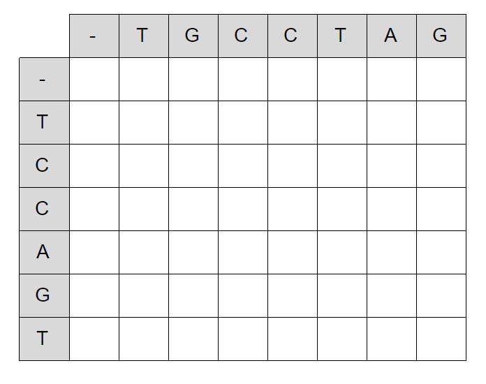
Na tabela acima, podemos ver que cada casa da matriz representa quantas ações são feitas para transformar a substring correspondente da vertical na da horizontal.
Vamos agora entender o preenchimento dessa tabela...
Os dois primeiros '-' antes de cada string representa... nada!! isso mesmo, nada.
Tratamos esse primeiro espaço como a substrig ' ' (vazia) e, antes de explicar algo,
você consegue deduzir quantas ações realizamos para tranformar nada em nada?
continuar ou terminar
Para tranformar nada em nada faremos..... 0 ações!
Começaremos nossa matriz com primeiro elemento 0.
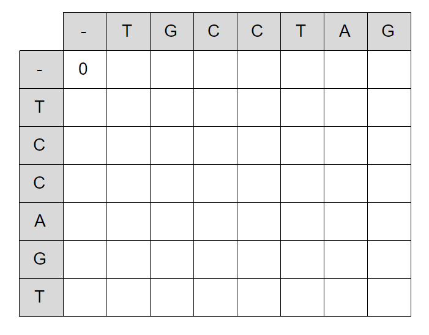
O proximo passo é pensar, antes de qualquer coisa, na primeira linha e na primeira coluna.
Ainda antes de explicar a manha do algoritmo, você consegue deduzir as casas da matriz da primeira linha e coluna?
DICA:
A primeira linha representa quantas ações faremos para tranformar nada em
'T','TG','TGC', ... E podemos ver a coluna com os mesmos olhos.
continuar ou terminar
Na primeira linha, temos que Inserir (uma ação) cada caractere da string em nada. Podemos então deduzir a primeira linha...
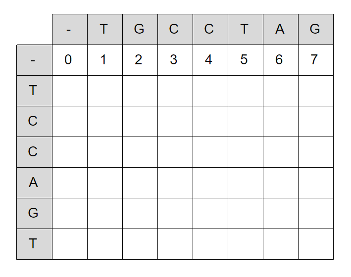
E assim, analogamente, faremos com a primeira coluna também.
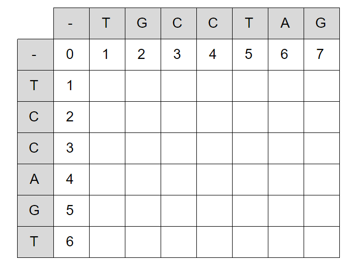
Estamos com o terreno arado para ccomeçar, de verdade, a lógica do algorítimo!
Só avance se você entendeu as deduções de linhas e colunas...
continuar ou terminar
A manha do algorítimo é o seguinte:
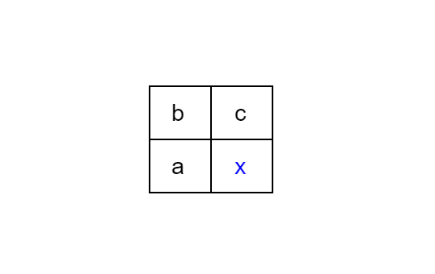
Iremos sempre olhar para um grupo de 4 casas e definir o valor da casa inferior direita (x) com base nas outras.
Em suma, x vai ser igual a algum dos valores a, b ou c acrescentando o custo de uma ação (1). Portanto, x = a+1 ou b+1 ou c+1.
Esta lembrado das ações que podemos realizar??
- A escolha de a equivale a uma Remoção
- A escolha de b equivale a um Alinhamento
- A escolha de c equivale a uma Inserção
Ou seja..
- Se escolhermos a iremos remover o caractére equivalente na horizontal
- Se escolhermos b iremos alinhar o caractére equivalente na horizontal
- Se escolhermos c iremos inserir o caractére equivalente na horizontal
Agora.. Qual escolher??
Tente deduzir qual seria o melhor.
DICA:
Tente lembrar do significado dos numeros das casas...
continuar ou terminar
Queremos seguir uma linha que representa o menor numero de ações que faremos não é mesmo? então o melhor valor para se escolher é o MENOR valor
Para ficar mais facil, vamos representar em pseudo-código
var x = min(a, b, c) + 1Mas ainda não acabou! temos mais um passo para ser feito... (lembra da observação acima?)
Para que possamos adicionar uma ação (+1), teremos que, efetivamente, realizar uma ação, certo? Portanto, no caso da escolha de alinhamento, antes de somar 1, devemos comparar os caractéres equivalentes e ver se são iguais! Se não forem, não realizaremos nenhuma ação e o numero que somaremos não será um, mas sim 0!
corrigindo o pseudo-código acima:
var x = min(a, b, c) + (if char1 != char2: 1, else: 0)Vamos agora completar nossa tabela!
Clique aqui para ter acesso a um template da tabela. Baixe-o para realizar a próxima parte.
Só continue se entendeu a lógica
continuar ou terminar
Vamos separar nosso preenchimento de cada casa em somente 2 passos:
Olhar para a vizinhança a, b e c (como explicado anteriormente) e escolher o menor valor
No caso de escolher b, checar os caractéres equivalentes e adicionar 1 se forem diferentes ou 0 se forem iguais
Vamos por em pratica a última parte que vimos voltando na matriz pronta para ser preenchida.
Neste caso, temos 1, 0 e 1 para escolhermos. Vamos escolher o menor (0) e, ja que os caractéres são iguais, adicionar 0.
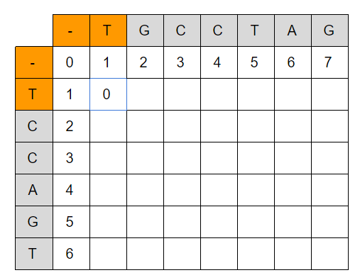
Essa proxima linha interia pode ser deduzida rapidamente pois queremos adicionar as substrings somente em 'T'
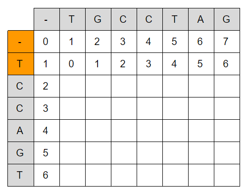
Continuando, temos agora 2, 1, e 0 sendo que o valor escolido foi c. Portanto apenas somamos 1
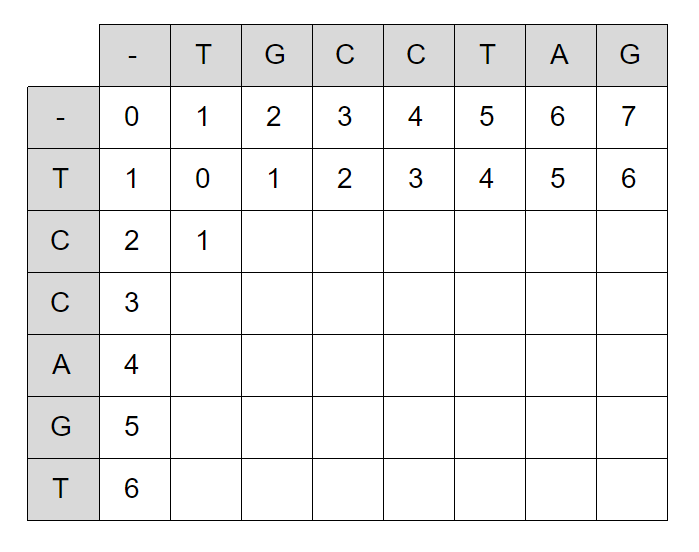
Aqui temos um caso parecido com o inicial, mas dessa vez com caractéres diferentes. Portanto, somamos 1
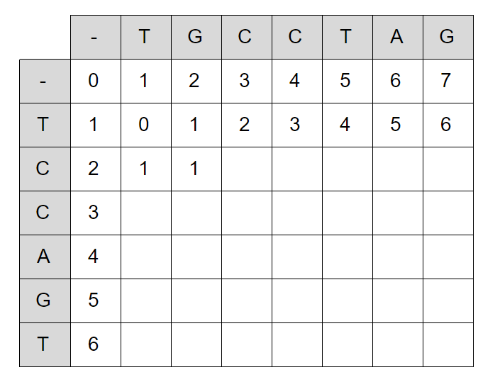
Agora temos um caso de impate! oque faremos agora...
Basta escolher o que nos resultará em um menor número! Neste caso, temos 1 e 1 no valor a e b com caracteres iguais. Portanto, o melhor a ser escolido é b porque não somaremos 1 no final
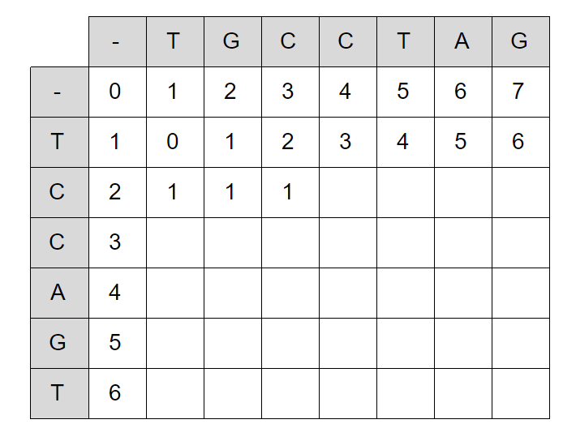
Agora é sua vez! Tente completar a tabela.
Não continue sem esclarecer suas dúvidas
continuar ou terminar
Se tudo deu certo, você chegou em uma tabela igual (ou pelomenos parecida) com essa:
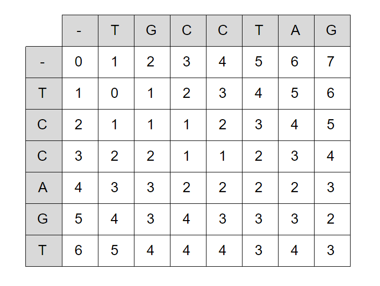
Com ela preenchida, se repararmos no ultimo valor da matriz...
... ele representa o numero de ações que tomamos para transformar toda a string da horizontal na string da vertical!
Só nos resta uma coisa! Saber quais foram as ações e onde elas ocorreram.
Para isso, vamos desenhar uma linha guia começando do ultimo elemento e ligando o menor numero subsequente da casa atual. Em suma, estamos apontando para a origem da casa atual e traçando o caminho pelo qual foi percorrido para chegar no resultado.
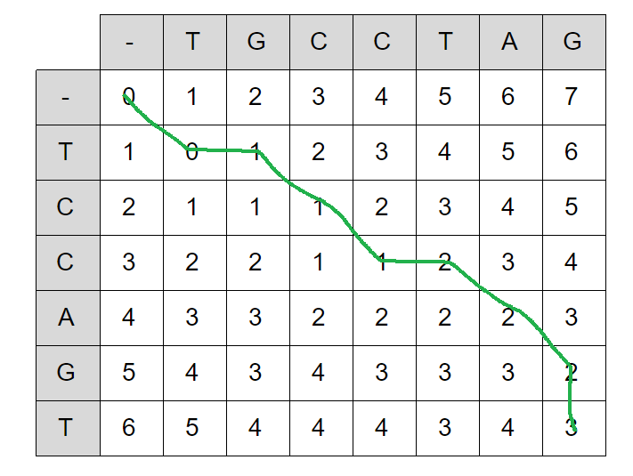
Agora... Está lembrando da representação de cada movimento das ações? Volte nas listas da manha do algoítmo caso não lembre..
continuar ou terminar
Lemos essa linha do primeiro ítem da matriz para o último (sentido contrário do qual desenhamos) e seguimos as representações de cada movimento.
Concluindo:
Na string 'TCCAGT' nós:
- Alinhamos T ->
'TCCAGT'(continua igual em alinhamentos com caracteres iguais) - Inserimos G ->
'TGCCAGT' - Alinhamos C ->
'TGCCAGT' - Alinhamos C ->
'TGCCAGT' - Inserimos T ->
'TGCCTAGT' - Alinhamos A ->
'TGCCTAGT' - Alinhamos G ->
'TGCCTAGT' - Removemos T ->
'TGCCTAG'
Transformamos a string 'TCCAGT' em 'TGCCTAG'
Que tal fazermos isso em código agora!
continuar ou terminar
Vamos implementar!
Agora que já entendemos a lógica do funcionamento, vamos implementar isto em uma ferramenta muito conhecido por todos nós: o Python!
Para começar vamos criar uma função que recebe duas strings x e y e prepara a matriz inicial, preenchida com zeros.
def prepara_matriz(x, y):
matriz = []
for i in range(len(x) + 1):
linha = []
for j in range(len(y) + 1):
linha.append(0)
matriz.append(linha)
return matrizConsiderando que temos os valores de x e y, podemos deduzir como ficaria o código a seguir:
x = "TGCCTAG"
y = "TCCAGT"
z = prepara_matriz(x, y)
print(z)continuar ou terminar
A saída seria:
[[0, 0, 0, 0, 0, 0, 0, 0],
[0, 0, 0, 0, 0, 0, 0, 0],
[0, 0, 0, 0, 0, 0, 0, 0],
[0, 0, 0, 0, 0, 0, 0, 0],
[0, 0, 0, 0, 0, 0, 0, 0],
[0, 0, 0, 0, 0, 0, 0, 0],
[0, 0, 0, 0, 0, 0, 0, 0]]OBSERVAÇÃO: Podemos escrever esse código todo em apenas uma linha, mas esse não é o foco do handout.
def prepara_matriz(x, y):
matriz = [[0 for i in range(len(x) + 1)] for j in range(len(y) + 1)]
return matrizCom isso seguimos para a segunda etapa que, assim como na explicação da lógica do algoritmo feita neste mesmo handout, iremos preencher a primeira linha e primeira coluna da nossa matriz.
Como a primeira linha e a primeira coluna devem ser preenchidas com uma contagem dos valores, logo podemos melhorar nossa função prepara_matriz!
def prepara_matriz(x, y):
matriz = []
for i in range(len(y) + 1):
linha = []
for j in range(len(x) + 1):
linha.append(0)
matriz.append(linha)
for l in range(1, len(x) + 1):
# primeira linha
matriz[0][l] = l
for c in range(1, len(y) + 1):
# primeira coluna
matriz[c][0] = c
return matrizAssim, agora teremos a seguinte saída...
[[0, 1, 2, 3, 4, 5, 6, 7],
[1, 0, 0, 0, 0, 0, 0, 0],
[2, 0, 0, 0, 0, 0, 0, 0],
[3, 0, 0, 0, 0, 0, 0, 0],
[4, 0, 0, 0, 0, 0, 0, 0],
[5, 0, 0, 0, 0, 0, 0, 0], Dessa forma vamos relembrar do início do handout e as três ações possíveis:
- Alinhar um caractere de uma palavra na outra, sinônimo de copiar
- Inserir um caractere novo em uma das palavras
- Remover um caractere de uma das palavras.
Vamos criar uma nova função para resolver a matriz...
def resolve_matriz(matriz, x, y):
for k in range(1, len(x) + 1):
# Percorrendo termo a termo
for i in range(1, len(y) + 1):
for j in range(1, len(x) + 1):
# A função min() retornará o menor dentre os valores dados como argumentos
matriz[i][j] = min(matriz[i-1][j-1] + checa_alinhamento(x, y, i-1, j-1), # Alinhar
matriz[i-1][j] + 1, # Deletar
matriz[i][j-1] + 1) # Inserir
return matrizPorém ao ler este recorte de código, você deve ter percebido que não declaramos nenhuma função "checa_alinhamento" e... você está certo... por isso vamos ao trabalho!
Sabemos que a função "checa_alinhamento" irá comparar dois termos e retornará 1 para caso seja necessário um alinhamento, logo uma cópia do que chamamos aqui de "valor base" e 0 caso contrário.
Continue assim que pensar em uma forma de definir esta função.
continuar ou terminar
É um código bem simples...
def checa_alinhamento(x, y, i, j):
if (y[i] != x[j]):
return 1
else:
return 0Agora só é necessário rodar tudo e...
x = "TGCCTAG"
y = "TCCAGT"
z = prepara_matriz(x, y)
z = resolve_matriz(z, x, y)
print(z)...voilà... temos a seguinte saída...
[[0, 1, 2, 3, 4, 5, 6, 7],
[1, 0, 1, 2, 3, 4, 5, 6],
[2, 1, 1, 1, 2, 3, 4, 5],
[3, 2, 2, 1, 1, 2, 3, 4],
[4, 3, 3, 2, 2, 2, 2, 3],
[5, 4, 3, 3, 3, 3, 3, 2],
[6, 5, 4, 4, 4, 3, 4, 3]]Exatamente o que tínhamos previsto quando simulamos o código na mão...
Mas o código não acaba por ai! Devemos ainda descobrir o caminho de ações realizadas para chegar no resultado...
Vamos criar mais uma função que terá como saída este caminho.
continuar ou terminar
Utilização na biotecnologia
Com o passar dos anos, cada vez mais, o algoritmo de Needleman e Wunsch foi sendo reconhecido como ferramenta fundamental para a análise de proteínas no desenvolvimento e sintetização de vacinas para o combate de doenças.
É graças ao que esses caras desenvolveram nessa época que conseguimos hoje ter acesso de forma fácil e simples a ferramentas complexas de análise genética só que do conforto de casa.
Um exemplo dessas ferramentas é o Blast.
Chegando no site, você vai se deparar com essa imagem. Clique no botão que a "setinha" aponta.
Na página seguinte, insira nessa caixa de texto maiorzinha o seguinte código proteico.
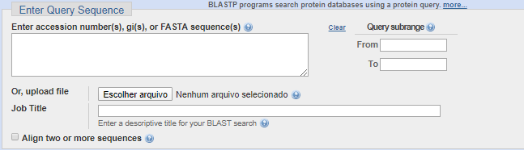
BETA-GALACTOSIDASE|BIFIDOBACTERIUM BIFIDUM S17 (883062)
MSKRRKHSWPQPLKGAESRLWYGGDYNPDQWPEEVWDDDIRLMKKAGVNLVSVGIFSWAKIEPEEGKYDFDWLDRA
IDKLGKAGIAVDLASATASPPMWLTQAHPEVLWKDERGDTVWPGAREHWRPTSPVFREYALNLCRRMAEHYKGNPY
VVAWHVSNEYGCHNRFDYSDDAMRAFQKWCKKRYKTIDAVNEAWGTAFWAQHMNDFSEIIPPRYIGDGNFMNPGKL
LDYKRFSSDALKELYIAERDVLESITPGLPLTTNFMVSAGGSMLDYDDWGAEVDFVSNDHYFTPGEAHFDEVAYAA
SLMDGISRKEPWFQMEHSTSAVNWRPINYRAEPGSVVRDSLAQVAMGADAICYFQWRQSKAGAEKWHSSMVPHAGE
DSQIFRDVCELGADLGRLSDEGLMGTKTVKSKVAVVFDYESQWATEYTANPTQQVDHWTEPLDWFRALADNGITAD
VVPVRSDWDSYEIAVLPCVYLLSEETSRRVREFVANGGKLFVTYYTGLSDENDHIWLGGYPGSIRDVVGVRVEEFA
PMGNDMPGALDHLDLDNGTVAHDFADVITSTADTSTVLASYKAERWTGMNEVPAIVANGYGDGRTVYVGCRLGRQG
LAKSLPAMLGSMGLSDLAGDGRVLRVERADAAAASHFEFVFNRTHEPVTVDVEGEAIAASLAHVDDGRATIDPTGV
VVLRRNa mesma página, você terá que selecionar o set de busca que deseja no dropdown indicado na imagem a seguir.
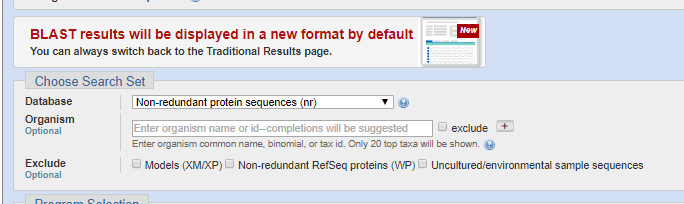
Selecione a opção Protein Data Bank proteins(PDB)
Em seguida clica em BLAST no fim da página.
O programa vai rodar o algoritmo apresentado comparando a sequencia proteica que eu lhe forneci com as milhares que ele tem no PDB que é um Data Bank Mundial. E na página seguinte no fim dela ele vai retornar todas as bases proteicas que foram comparadas com a sua e os percentuais de similaridades.
**Vale resaltar que o BLAST é uma das ferramentas que esta sendo utilizadas no combate ao COVID-19 pois serve como forma de comparacão rápida dos diversos sequenciamentos geneticos ao redor do mundo.
continuar ou terminar
Conclusão
Nesse handout trabalhamos um algorítimo sequencial que se mostrou importante para muito do que se tem desenvolvido na genetica. Em resumo sua implementação consiste em ter duas strings para comparacão e fazer o uso das tecnicas de construção da matrix que ensinamos para achar a quantidade de modificações necessárias para transformar uma string na outra, em seguida usamos as ações especiais pra deixar as strings iguais.
Vimos também durante o handout como fazer a implementação desse algoritmo em Python. Usamos funções para preparar a matriz pra resolver checando alinhamento dos caracteres e deletando ou inserindo caso fosse necessário.
E em seguida foi mostrado uma aplicação real que retrata o quando essas operações criadas por Needleman e Wunsch foram importantes para o desenvolvimento e aprimoramento da humanidade até o estado que vemos ela hoje. Trazendo a capacidade de transmitir e comparar em tempo real descobertas feitas ao redor do mundo.
rascunhos
Isto é texto normal. Para mudar de parágrafo, pule uma linha.
Em texto normal, você pode usar itálico, negrito, código e comando.
Como você pode ver nesse exemplo, o modo de código é para ser usado em texto de
código-fonte. Quando você tenta escrever texto normal, efeitos estranhos podem
acontecer, como essa cor diferente no "o" com acento agudo.
Você também pode usar \(\LaTeX\), se souber. Tanto no meio (\(\sum^n_{i=1}i\)) de parágrafos, quanto em parágrafos próprios centralizados:
\[\sum^n_{i=1}i.\]
Adicionalmente, também pode criar
listas
não-ordenadas,
assim como
listas
ordenadas.
Finalmente, também pode criar
print('código em parágrafo destacado,')assim como
comando em parágrafo destacado.Nesses dois casos, espaços em branco e quebras de linha serão respeitados.
Exemplo de subtítulo
A notação para criar um link é bem simples.
A notação para criar

é bem parecida. Espera-se que todas as imagens estejam na pasta img.
A notação para criar
um aviso
é mais simples ainda.
Para terminar, só falta mostrar como criar uma pausa.
Não continue sem vir validar no canal geral.
continuar ou terminar
That's all Folks!